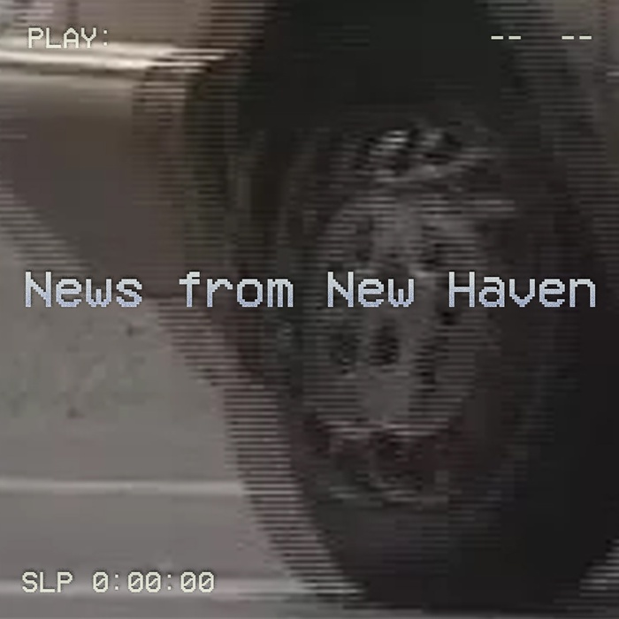
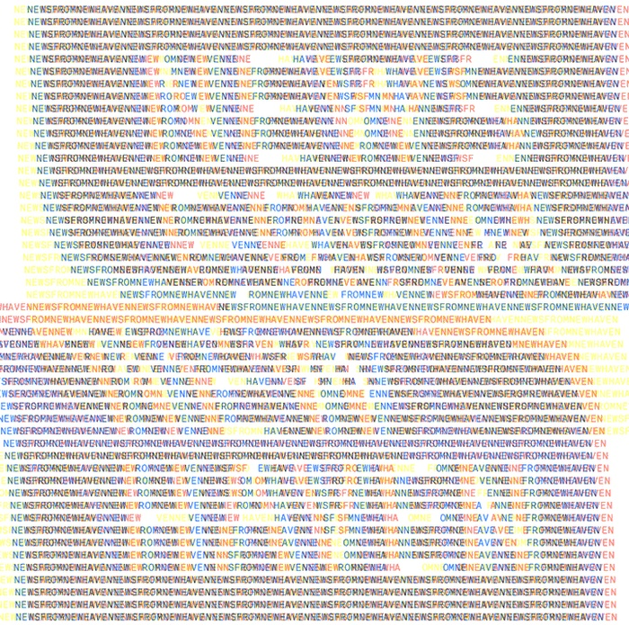
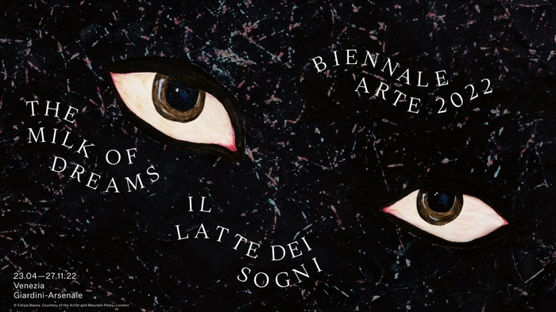
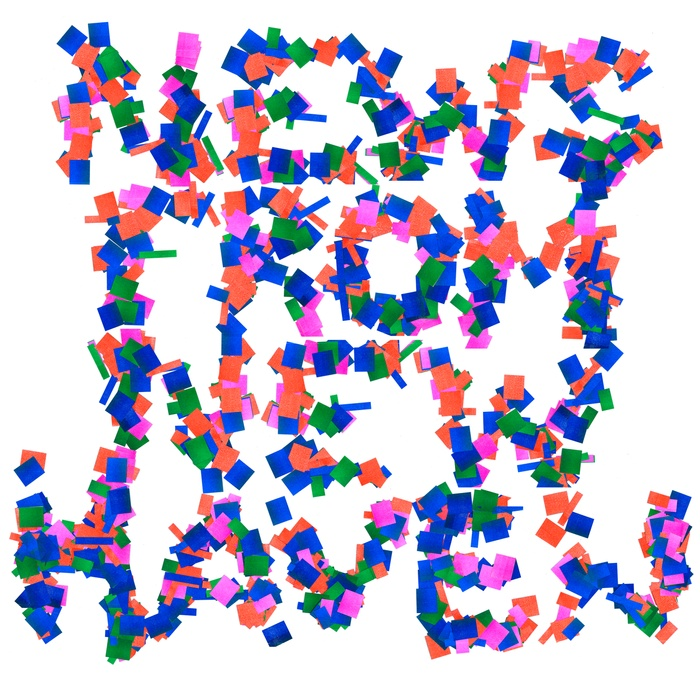
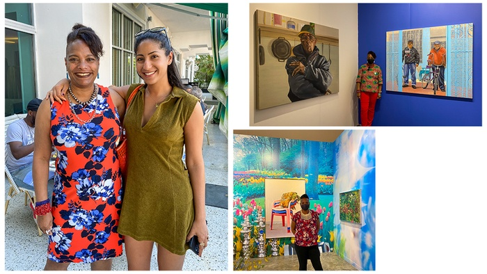
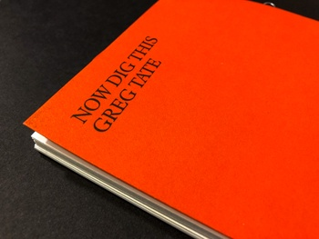
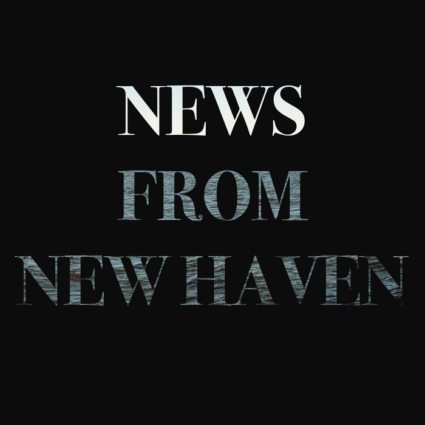
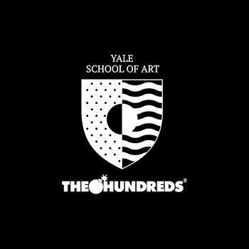

NEWS
Yale School of Art
APRIL 30, 2022
CELEBRATING FACULTY AND ALUMS IN VENICE
ANOKA FARUQEE APPOINTED ASSOCIATE DEAN
EXPERIENCE NEXT DAY SOUP 2022 SCULPTURE MFA THESIS EXHIBITION
COMMUNITY FIELD TRIPS CONTINUE WITH VISITS TO NXTHVN AND ARTSPACE
ALUMS NAMED 2022 GUGGENHEIM FELLOWS
April 2022 header image by Riley Duncan, Sculpture MFA ‘22.
MARCH 31, 2022

2022 OPEN STUDIOS, NOW HAPPENING IN-PERSON AND ONLINE!
JOIN US TOMORROW FOR A LAUGHTER WORK~PLAYSHOP
EXPERIENCE VIBRANT MATTERS: 2022 PAINTING/PRINTMAKING MFA THESIS EXHIBITION
ALUM AWARD AND EXHIBITION HIGHLIGHTS
March 2022 header image by Yuseon Park, Graphic Design MFA ‘23.
FEBRUARY 28, 2022
COMMUNITY WORKSHOPS TACKLE THE JOB OF A WORKING ARTIST
SAVE THE DATE FOR VIRTUAL OPEN STUDIOS 2022: APRIL 9 AND 10
FIRST IN-PERSON LECTURES NOW ON YOUTUBE
ALUMS GATHER IN LOS ANGELES TO CELEBRATE SAM MESSER
February 2022 header image by Mike Tully, Graphic Design MFA ‘22.
FEBRUARY 9, 2022

YALE SCHOOL OF ART ALUMNI AND FACULTY TO PARTICIPATE IN PRESTIGIOUS VENICE BIENNALE
The Venice Biennale’s visual identity for the 2022 edition is based on works by Felipe Baeza. Courtesy of the Venice Biennale.
JANUARY 31, 2022

SPRING 2022 CURRICULAR HAPPENINGS & HIGHLIGHTS
SEEKING DIRECTOR / TENURE-TRACK FACULTY MEMBER IN GRAPHIC DESIGN
CELEBRATING THE SUCCESS OF SCHOOL OF ART ALUMS AT MIAMI ART FAIRS
STAFF UPDATES: A NEW ADDITION TO THE DEAN’S OFFICE
January 2022 header image by Filip Birkner, Graphic Design MFA ‘23.
JANUARY 20, 2022
 CELEBRATING THE SUCCESS OF YALE SCHOOL OF ART ALUMS AT MIAMI ART FAIRS
DECEMBER 8, 2021

YALE SCHOOL OF ART MOURNS THE PASSING OF GREG TATE
2021 Commencement publication, “Now Dig This” by Greg Tate.
OCTOBER 21, 2021

CELEBRATING MACARTHUR FELLOW JORDAN CASTEEL
EVENTS WITH DEAN PINDER ACROSS NEW HAVEN
NEW POST-GRAD FELLOWSHIP PROJECT FEATURING 2021 MFAS
NEW POSITION IN THE DEAN’S OFFICE: PROJECT SPECIALIST
ACCESS OUR CHANNEL AT YALEART.ORG/YOUTUBE
October 2021 header image by Riley Duncan, Sculpture MFA ‘22.
OCTOBER 14, 2021
 NEW POST-GRAD FELLOWSHIP PROJECT, IN COLLABORATION WITH THE HUNDREDS
EMAIL PUBLICATIONS
News from New Haven
 “News from New Haven” is a monthly public newsletter about news and events happening at the Yale School of Art.
“News from New Haven” is a monthly public newsletter about news and events happening at the Yale School of Art.
Subscribe here!